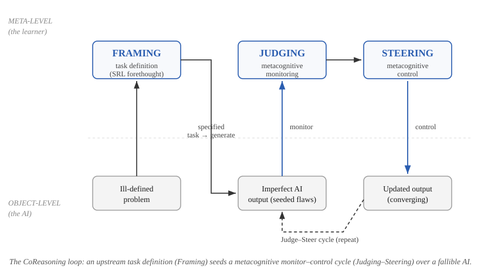
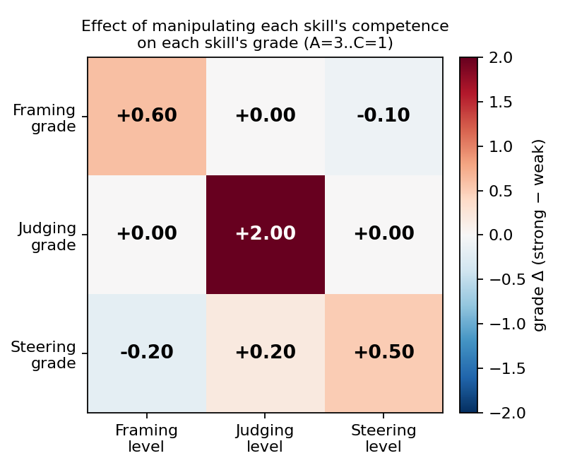
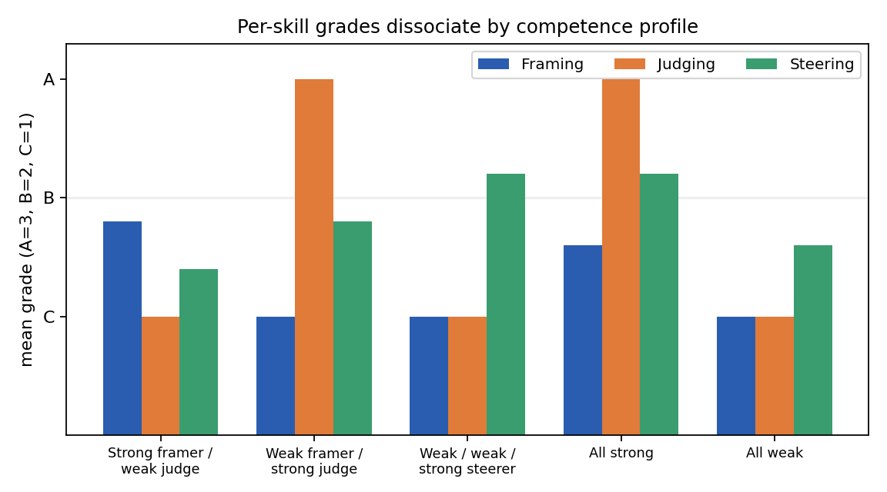

Working draft — arXiv preprint. Target: Computers & Education: AI (Position Paper) / AIED Blue Sky / IJAIED.
Generative AI makes it trivial to obtain an answer and difficult to obtain understanding. As large language models are absorbed into education, the dominant design objective has been speed-to-answer, even as a growing body of evidence links uncritical AI use to cognitive offloading and weakened critical thinking. We argue that the educational question is not whether students use AI but whether they use it as critical collaborators, and that this capability can be named, decomposed, and assessed. We propose CoReasoning, a competency model that factors productive work with generative AI into three temporally and cognitively distinct, independently-assessable skills: Framing (transforming an ill-defined problem into a well-specified task before invoking AI), Judging (critically evaluating AI output for errors, gaps, unstated assumptions, and risk), and Steering (iteratively redirecting the AI toward a better solution across cycles). The central structural claim that distinguishes CoReasoning from existing AI- and prompt-literacy frameworks is the separation of the pre-generation skill (Framing) from the post-generation corrective skill (Steering), with Judging as the epistemic gate between them. We ground each skill in established theory (metacognitive monitoring and control; self-regulated learning; epistemic vigilance and critical thinking; productive struggle), state five testable propositions about how the skills relate, position the model against the nearest prior frameworks, and report a proof-of-concept instrument together with a feasibility demonstration that the three skills dissociate and can be measured automatically. We close with the tensions a mature account must resolve and a concrete assessment-validation agenda.
The introduction of generative AI into learning environments has, by default, optimized for the wrong variable. Most AI-in-education tools shorten the path from question to answer. Yet the answer was never the point of education: the cognitive work of specifying a problem, evaluating a candidate solution, and improving it is where learning happens. When that work is delegated wholesale to a machine, the learner is left with a correct artifact and an unchanged mind.
Recent evidence makes the stakes concrete. Frequent, uncritical AI use correlates with lower critical-thinking performance, an effect mediated by cognitive offloading and most pronounced in younger users (Gerlich, 2025). Controlled studies of AI-assisted writing report "metacognitive laziness," in which learners bypass the self-regulatory processes of diagnosing, evaluating, and revising (the 2024 essay-writing literature), and neurophysiological work describes an accumulation of "cognitive debt" when an assistant carries the reasoning load (Kosmyna et al., 2025). At the same time, field studies of professional AI use show that the benefit of AI is sharply conditional on the user's skill in directing it: assistance helps inside a model's competence frontier and harms outside it (Dell'Acqua et al., 2023), and the most effective users adopt an iterative, critical "push-back-and-validate" mode rather than wholesale delegation (Randazzo et al., 2025).
These findings share a structure. The difference between productive and counterproductive AI use is not access to AI; it is a competency that some learners exercise and others do not. If that competency can be named and decomposed, it can be taught and assessed. Current AI-literacy assessment can often tell us that a learner's AI use is unproductive but not why: whether they specified the task badly, failed to detect the flaws in the output, or knew the flaws but could not correct them. These are different failures with different remedies, and a single "prompting" score conflates them.
We propose CoReasoning, a competency model that decomposes productive work with generative AI into three distinct skills, each independently assessable:
Contributions. This paper makes the following contributions:
We make no learning-outcome claims; the empirical material is a feasibility demonstration of construct separability and measurability, not an efficacy study.
Existing instruments for assessing how students work with AI are not wrong so much as under-resolved. Knowledge-oriented frameworks such as Long and Magerko (2020) and the UNESCO (2024) student competency framework define AI literacy chiefly as understanding AI systems: what AI is, what it can and cannot do, how it works, and how it should be governed. These are necessary, but they say little about the performance of working with a model on a task. Prompt-literacy and generative-AI-literacy models (Lo, 2023; Annapureddy et al., 2024) move closer to performance, but they bundle task specification and iterative refinement into a single "prompting" competency and treat evaluation of the output as a downstream check rather than a co-equal skill.
The cost of this coarse resolution is diagnostic. When a learner's AI use produces a poor result, a single prompting score cannot tell an instructor which cognitive operation failed: did the learner specify the task badly, so that the model solved the wrong problem; did they fail to detect the flaws in an otherwise plausible output; or did they see the flaws but issue corrections too vague to fix them? These are three different failures with three different remedies, teaching problem specification, teaching critical evaluation, and teaching corrective communication, and an instrument that cannot separate them cannot guide instruction. A diagnostic competency model must therefore decompose the human-AI loop into the distinct operations that can each break, and must show that those operations are in fact separable in learners. That is the gap CoReasoning addresses.
The three skills are not an arbitrary list; they instantiate a well-understood cognitive architecture. Nelson and Narens (1990) describe metacognition as a two-level system: an object level (cognition itself) and a meta level (a dynamic model of the object level), linked by monitoring (information flowing from object to meta) and control (commands flowing from meta to object). In CoReasoning, the AI's generative process is the object level the learner supervises:
The Judge→Steer cycle is therefore a monitor→control loop seeded by a task definition. This is the structural spine of the framework and the reason the three skills cohere rather than merely coexist (Figure 1).

Figure 1. The CoReasoning loop. An upstream task definition (Framing, a self-regulated-learning forethought activity) sets the standards against which a metacognitive monitor–control cycle (Judging then Steering) supervises a fallible AI at the object level. Judging is the monitor's read-out; Steering is the controller's write.
Existing frameworks treat "use the AI well" as one skill or, at most, pair "prompt" with "evaluate." CoReasoning's distinctive move is to separate two operations that prior models fuse: the pre-generation skill of structuring the task (Framing) and the post-generation skill of correcting the output (Steering). These are different cognitive acts at different points in time, with different error modes and different instructional remedies. A learner can frame impeccably and steer poorly (detect a flaw but issue a vague correction), or steer fluently atop a malformed task (drive the AI energetically toward the wrong target). Collapsing both into "prompting" hides exactly the distinctions an educator needs.
Because Judging and Steering both occur after generation and in a tight loop, their boundary needs stating precisely. Judging is assessment; Steering is action. Judging produces a representation of what is wrong with the current output, an internal or articulated list of detected flaws, gaps, and risks, and a calibrated sense of how much to trust the output. It is evaluative and its output is a diagnosis. Steering consumes that diagnosis and produces a corrective instruction aimed at changing the next output: it is generative and directive, and its quality depends on prioritization (addressing the most critical flaw first), specificity (an actionable command rather than "improve this"), and effectiveness (whether the output actually converges). In the monitor-control terms of Section 3.1, Judging is the monitor's read-out and Steering is the controller's write. The two dissociate because the competencies differ: a learner may diagnose accurately yet communicate the fix poorly (good Judging, weak Steering), or issue fluent, confident commands that target the wrong thing because the diagnosis was wrong (weak Judging propagating into misdirected Steering, the failure mode Proposition P2 predicts). This last point also reconciles an apparent tension: P2 (Judging bounds Steering) implies the two grades will be positively correlated in the aggregate, while P3 claims they dissociate. Both hold. P2 is a ceiling relation (Steering cannot exceed the quality its Judging permits), which induces correlation without identity; P3 is the claim that the off-diagonal is well below the reliability ceiling, so the skills are not interchangeable. We therefore test dissociation pairwise and report whether each skill's grade responds to its own manipulated competence while remaining comparatively flat in the others, rather than relying on a single global factor model.
Each skill is anchored in established theory, and the anchors are mutually consistent because they share the metacognitive backbone of Section 3.1.
Framing is the task-definition phase of self-regulated learning. In the COPES model (Winne & Hadwin, 1998), self-regulated work begins by constructing a definition of the task and the standards a product must satisfy; Zimmerman's (2000) forethought phase similarly precedes performance with goal setting and strategic planning. Framing applies this phase to a human-AI loop: the learner converts an ill-defined situation into a specified task with explicit constraints and success criteria. In Bloom's revised taxonomy (Anderson & Krathwohl, 2001), specifying an original task is a Create-level activity, and the competence to know what makes a task tractable for a given tool is metacognitive task knowledge (Flavell, 1979).
Judging is metacognitive monitoring (Nelson & Narens, 1990) directed at an external generative source. Its content is the evaluative core of critical thinking, the Delphi-consensus skills of analysis and evaluation (Facione, 1990) and the Paul-Elder intellectual standards, which supply a ready vocabulary for assessing reasoning. Because the object being judged is a communicated knowledge claim from a fluent but fallible source, the most precise anchor is epistemic vigilance (Sperber et al., 2010), which pairs source monitoring (is this source trustworthy?) with content evaluation (is this internally and externally coherent?). Barzilai and Chinn's (2018) account of apt epistemic performance adds the criteria-for-good-knowledge dimension that a learner must hold to judge well, and the human-automation literature supplies the calibration target: reliance matched to actual reliability (Lee & See, 2004), the failure of which is the over-reliance documented in AI-assisted decision-making (Bansal et al., 2021; Buçinca et al., 2021).
Steering is metacognitive control (Nelson & Narens, 1990): acting on the monitoring signal to change the object-level process. Pedagogically it is an inversion of cognitive-apprenticeship coaching and scaffolding (Collins, Brown & Newman, 1989), in which the learner, rather than the master, supplies the corrective guidance, and its quality is well described by feed-forward, the "where to next" component of effective feedback (Hattie & Timperley, 2007).
The loop and its positioning. The Judge-Steer cycle is designed to push learners into the Interactive mode of the ICAP framework (Chi & Wylie, 2014), in which knowledge is co-constructed through dialogue rather than passively received, the mode ICAP associates with the greatest learning. The framework casts the AI as a mediating cultural tool that extends the learner's zone of proximal development (Vygotsky, 1978): the learner accomplishes with the model what they could not alone, while internalizing the Framing, Judging, and Steering moves for eventual independent use.
The pedagogical stance. CoReasoning's rejection of speed-to-answer rests on the literature of productive struggle and desirable difficulties (Bjork & Bjork, 2011; Kapur, 2008): conditions that slow performance but deepen learning. The friction of specifying, evaluating, and correcting is not an obstacle to be engineered away but the very locus of learning, which is why the instructional design deliberately presents imperfect output for the learner to improve rather than a polished answer to accept.
The constructs that compose CoReasoning are not individually new; what is new is their separation into three parallel, independently-assessable competencies anchored in a monitor-control architecture. We make the boundary explicit by confronting the nearest priors directly.
AI-fluency frameworks. The closest practitioner framework is the 4D model of AI fluency (Dakan & Feller, 2025): Delegation, Description, Discernment, Diligence. Its Discernment maps cleanly onto Judging, but its Description bundles two operations we deliberately separate: crafting the initial specification and conducting the iterative back-and-forth. CoReasoning's contention is that these are distinct skills at distinct times, the pre-generation act of Framing and the post-generation act of Steering, with different error modes (a malformed task versus a mis-targeted correction) and different instructional remedies. CoReasoning also derives its skills from learning theory and an assessment rationale rather than from a fluency heuristic, and so yields rubrics and dissociation predictions that a checklist does not.
Metacognitive analyses of generative AI. The strongest construct-level neighbour is Tankelevitch et al. (2024), who analyse generative-AI use through the lens of metacognitive demands, naming prompting, output evaluation, and workflow iteration as sites of metacognitive monitoring and control. We share the metacognitive foundation but differ in goal: their contribution is a demands analysis (a cognitive-load lens that explains why GenAI is hard to use well), whereas ours is an assessable competency model with explicit rubrics, propositions, and feasibility evidence that the components dissociate. The two are complementary: their analysis motivates why each of our skills is cognitively demanding; our framework makes each one measurable.
Prompt-literacy frameworks. Prompt-literacy models such as CLEAR (Lo, 2023) and the broader prompt-literacy literature define competence as constructing a precise prompt and iteratively refining it. This definition fuses Framing and Steering into a single "prompting" skill, exactly the conflation CoReasoning rejects. Treating them separately is not a cosmetic relabeling: it predicts, and our feasibility demonstration supports, that a learner's Framing and Steering grades can diverge.
Knowledge-oriented AI-literacy frameworks. Field-defining competency sets such as Long & Magerko (2020) and the UNESCO (2024) student framework define AI literacy primarily as understanding AI systems, their capabilities, limits, and ethics, rather than as executing tasks within a human-AI loop. They contain no Framing or Steering construct and only a diffuse notion of critical evaluation that partly overlaps Judging. CoReasoning is orthogonal: it specifies the task-execution competencies these frameworks leave implicit.
Empirical accounts of AI-use modes. Field studies describe how skilled users actually work with AI: the "Cyborg" mode of continuous push-back-and-validate (Randazzo et al., 2025) and the sharp skill-dependence of AI's value at the competence frontier (Dell'Acqua et al., 2023). These describe the behaviour; CoReasoning supplies the assessable skill decomposition that underlies it.
Table 1 makes the boundary explicit by mapping each nearest prior framework's constructs onto Framing, Judging, and Steering. The recurring pattern is that prior frameworks either (i) omit a construct, or (ii) fuse Framing and Steering into one "prompting/iteration" skill.
Table 1. Where prior frameworks place the three CoReasoning skills.
| Prior framework | Framing (pre-generation) | Judging | Steering (post-generation) |
|---|---|---|---|
| 4D AI Fluency (Dakan & Feller, 2025) | Delegation + part of Description | Discernment | fused into Description |
| Metacognitive demands (Tankelevitch et al., 2024) | "prompting" (as a demand, not a skill) | "evaluating outputs" | "workflow iteration" |
| Prompt literacy / CLEAR (Lo, 2023) | fused into "prompting" | weakly present | fused into "iterative refinement" |
| AI literacy (Long & Magerko, 2020; UNESCO, 2024) | absent | diffuse "critical evaluation" | absent |
| Cyborg/Centaur modes (Randazzo et al., 2025) | "directed" mode (described, not assessed) | "push back / validate" | "continuous dialogue" |
No prior column cleanly separates the pre-generation and post-generation skills and treats all three as independently scored competencies. That conjunction is the contribution.
Validated GenAI-competency instruments. A parallel line of work builds psychometric instruments for AI and generative-AI competence, including validated scales such as GenAIComp (with factors derived from digital-competence frameworks) and assessment tests such as GLAT. These establish that GenAI competence can be measured, but their factor structures are literacy-oriented (information literacy, ethics, content creation) and do not isolate a Framing, Judging, or Steering construct. The work closest to ours pairs AI-collaboration literacy with metacognition and includes an AI-evaluation sub-construct that overlaps Judging; we differ in separating the pre-generation and post-generation control skills and in demonstrating their dissociation rather than positing correlated factors. CoReasoning is complementary to this measurement program: it supplies the specific, theory-derived decomposition that a future validated instrument could operationalize.
Problem formulation as the AI-era skill. A prominent strand argues that, as models absorb execution, the durable human skill shifts from prompt crafting to problem formulation, identifying, analyzing, and delineating the problem worth solving (Acar, 2023). This is precisely our Framing construct, and classroom work has begun to assess it directly, for example through "prompt problems" that require students to specify and evaluate rather than merely prompt (Denny et al., 2024). That Framing is a distinct competency is further supported by the older problem-finding literature, which established problem finding as empirically separable from problem solving (Runco & Chand, 1995). We build on this strand by placing Framing in a measured loop with Judging and Steering.
One-line novelty. CoReasoning is, to our knowledge, the first theoretically-grounded decomposition of productive generative-AI use into three independently-assessable competencies that separates pre-generation Framing from post-generation Steering, with feasibility evidence that the three skills dissociate. The defensible claim is not that any single skill is new, but that the separation is both theoretically motivated (monitor-control plus an upstream task definition) and empirically consequential (the skills can be measured apart).
The framework is instantiated in a deployed web platform, CoReasoning Lab, which we describe here so that the abstract skills map onto a concrete learner experience. The platform is role-based (student, instructor, administrator) and bilingual (English and Hebrew), and supports both practice and assessment modes and both multiple-choice and open-ended response formats per phase.
Authoring flow (instructor). An instructor defines a challenge by choosing a course and subject path; the system then generates the ill-defined problem, the three per-skill rubrics, the gold-standard framing, and the seeded-flaw solution that the learner will critique (Section 7.2). Challenges are organized into courses and can be assigned to cohorts.
Learner flow (student). From a dashboard of assigned challenges (Figure 2), a student enters a challenge run that walks through the framework's two phases (Figure 3):
This separation in the interface, distinct phases, distinct feedback channels, and distinct grade columns, is the framework's central claim made operational: a learner sees, and is scored on, three different things they did, not one undifferentiated "AI use." The remainder of this section describes the instrument that produces those scores.
To show that the three constructs are not only conceptually distinct but practically measurable, we describe a working instrument that scores each skill from a learner's transcript. The instrument is a pipeline of large-language-model prompts; we use it here as an existence proof that automated, rubric-driven scoring of Framing, Judging, and Steering is feasible, not as a validated assessment.
Challenge construction. Each challenge begins with a deliberately ill-defined problem generated to contain two or three unstated gaps, recorded internally but never shown. A per-challenge set of three rubrics, one each for Framing, Judging, and Steering, is generated for the subject area, each with three to five measurable criteria and explicit excellent and poor indicators. A gold-standard "best framing" is generated as an internal reference. The design instantiates an inverted cognitive apprenticeship: rather than observing an expert, the learner is given a fallible artifact to repair.
The deliberately-imperfect output. After the learner frames the task, the model produces a plausible, professional-looking solution that is required to embed two to four non-trivial issues, wrong-but-reasonable assumptions, missing edge cases, or subtle logical errors, each recorded internally with a severity label and none flagged to the learner. Across steering cycles, updates address the learner's commands but may introduce new minor issues, so that difficulty adapts to the quality of steering rather than collapsing to a perfect answer.
Scoring. Each skill is scored in two stages. A skill-specific evaluator assesses the learner's response against the (internal) rubric and produces per-criterion ratings on a three-point scale; a generic grading stage then aggregates those ratings into a final grade, weighting critical criteria more heavily rather than averaging. Crucially, the three evaluators differ in what they compare against: Framing is evaluated against the gold framing and the rubric; Judging is evaluated against the seeded ground-truth issues, yielding a recall/precision signal (issues correctly identified, missed, and falsely flagged); and Steering is evaluated against the trajectory of the output across cycles, rewarding corrections that demonstrably move the solution toward correctness. This is why the skills are measured apart: each evaluator interrogates a different referent.
The instrument used in this paper is the engine of a deployed prototype (CoReasoning Lab), a library of sixteen prompts spanning challenge construction, AI generation, and evaluation. Scoring a single learner exercises the relevant subset, the three skill evaluators and the generic grader, over controlled inputs, so that the measurements are reproducible and the ground truth is known. A methodological caveat applies throughout: the grader is itself a fallible language model, so the feasibility results below speak to the internal behavior of the instrument (does it separate controlled competence levels and dissociate the skills?), not to agreement with human experts, which is the separate validity question addressed by the prepared study in Section 10.
We exercise the instrument over controlled inputs to test two feasibility claims: that it discriminates competence and that the three skills dissociate (Proposition P3). We make no learning-outcome claims. The "learners" are simulated personas of controlled per-skill competence, generated by one model (gpt-4o-mini) and graded by a different model (gpt-4o), so that no model grades its own output. The validation against human expert graders is prepared but not yet run (Section 10).
Design. We use a crossed factorial: each of the three skills is independently set to a strong or weak competence level, giving $2^3 = 8$ profiles, crossed with five challenges across distinct subjects (algorithms, microeconomics, machine learning, databases, statistics), for 40 simulated learners and 255 blind grading calls. Framing and Steering responses are generated by the competence-conditioned learner model; Judging is operationalized by a competence-conditioned selection over the challenge's ground-truth seeded issues (a strong judge flags all real issues and no false ones; a weak judge flags few real issues and some false ones). Because the manipulation is per skill, the design can separate whether each grade tracks its own skill's competence (discrimination) from whether it is insensitive to the other skills' competence (dissociation).
Discrimination. Grades move monotonically with competence: the all-weak profile averages C on every skill, the all-strong profile averages between B and A, and each skill's grade rises when that skill is set to strong. The judging signal is mechanistically transparent: a strong judge flags all four seeded issues with no false alarms and is graded A; a weak judge flags none and raises false issues and is graded C.
Dissociation (the central result). Table 2 reports, for each graded skill, the change in its mean grade (on a 3-point scale, A=3..C=1) when each skill in turn is moved from weak to strong. The diagonal (the effect of a skill's own competence on its own grade) averages +1.03; the off-diagonal (the effect of the other skills' competence) averages −0.02, a ratio of roughly 60 to 1. Each grade responds to its own skill and is essentially flat in the others (Figure 2).
Table 2. Effect on each skill's grade of manipulating each skill's competence (grade Δ, strong − weak; N=40).
| grade of ↓ \ manipulated → | Framing | Judging | Steering |
|---|---|---|---|
| Framing | +0.60 | +0.00 | −0.10 |
| Judging | +0.00 | +2.00 | +0.00 |
| Steering | −0.20 | +0.20 | +0.50 |
The designed-contrast personas make the separation concrete (Figure 3). A weak-framer / strong-judge learner scores Framing C but Judging A; a strong-framer / weak-judge learner inverts this to Framing B, Judging C; a weak / weak / strong-steerer elevates only Steering. A single underlying "AI-use ability" cannot produce these crossed profiles.

Figure 2. Effect of manipulating each skill's competence (columns) on each skill's grade (rows). The diagonal (own-skill effect) dominates; off-diagonal (cross-skill) effects are near zero.

Figure 3. Mean per-skill grade for five competence profiles. Judging reaches A only when judging is strong, regardless of framing or steering; each skill responds to its own competence.
Scope and caveats. These results establish feasibility, not validity. (i) Judging's dissociation is partly built in: its competence is operationalized by a controlled selection over ground-truth issues, so its clean diagonal (+2.00, with zero cross-effects) confirms the grader correctly rewards recall/precision but is not, by itself, a discovered separation. Framing and Steering responses are free-text and blind-graded, so their positive own-effects (+0.60, +0.50) with near-zero cross-effects are the stronger evidence. (ii) The grader is a single model family; whether the dissociation replicates across grader backends, and whether the automated grades agree with human experts, are the validity questions deferred to Section 10. (iii) With three grade indicators a stable factor model is under-identified, so we report the manipulation-based effect matrix rather than an exploratory factor analysis. Steering shows the weakest own-effect, consistent with Proposition P2 (steering quality is bounded, and partly confounded, by the judging it follows).
A mature account must confront four tensions rather than paper over them.
Offloading versus productive struggle. Evidence that AI use can depress critical thinking through cognitive offloading (Gerlich, 2025; Kosmyna et al., 2025) appears to threaten any framework that puts learners in close partnership with AI. The resolution is in the zone-of-proximal-development stance: CoReasoning treats the AI as a mediating tool whose purpose is the learner's eventual independence, and it offloads execution while deliberately retaining the cognitive work of specifying, evaluating, and correcting. The framework is, in this sense, the designed inverse of metacognitive laziness (Proposition P5).
The calibration trap. Judging is metacognitive monitoring, and monitoring is only useful when calibrated. A learner who lacks the domain knowledge to recognize an error cannot detect that error in AI output, however vigilant. Judging is therefore bounded by domain competence, and the framework should be read as describing a skill that develops with domain knowledge, not as a substitute for it (Proposition P4).
Interactive is not automatically productive. ICAP predicts that interactive engagement yields the most learning, but rapid AI dialogue can be voluminous and shallow, a sequence of re-rolls rather than reasoning. Steering counts as genuine metacognitive control only when corrections are knowledge-generating, which is why the instrument rewards targeted, convergent corrections rather than mere repetition.
Standards can regress. Judging and Steering presuppose that the learner holds standards adequate to evaluate the output. When the AI is more competent in the domain than the learner, the standards the learner applies may be inferior to the artifact under review, a reversal that classical formative-assessment theory does not anticipate and that bounds the framework's applicability at the expert frontier.
The feasibility demonstration shows that the constructs are separable and measurable; it does not establish that the automated grades match expert human judgment, nor that exercising the skills improves learning. We therefore specify the validation program the framework invites.
First, an instrument-validity study: a stratified sample of transcripts is re-graded by multiple blind human experts using the per-skill rubrics, and agreement with the automated grader is reported as Cohen's $\kappa$, Fleiss' $\kappa$, and ordinal Krippendorff's $\alpha$, per skill, against the field-typical bar of $\kappa \approx 0.3$ to $0.8$. This step is indispensable rather than a formality: recent work shows that LLM-as-judge agreement with human experts is moderate and task-dependent, sometimes falling to Fleiss' $\kappa$ near $0.1$ to $0.3$ on hard rubric judgments (Anonymous, 2025), so automated grades must be validated against humans rather than assumed reliable. We have prepared this study (codebook, blinded rater task files, and scoring scripts) so that it can be run directly. Second, a construct-validity study at scale to test Propositions P1 through P4 with real learners, examining whether Framing, Judging, and Steering dissociate across a learner population and whether the proposed gating relations hold. Third, a grader-robustness study across multiple model backends to separate the framework's signal from any single model's idiosyncrasies. Only an efficacy study with real learners can test Proposition P5 and any learning claim; that is explicitly outside the present scope.
This is a conceptual contribution accompanied by a proof-of-concept instrument, not an efficacy study. The feasibility demonstration uses simulated learners of controlled competence, which establish that the grader has signal and that the skills can be measured apart, but which are not human learners. The instrument is exercised with a single model family (llama-3.3-70b) on English-language challenges, and the automated grades have not yet been validated against human experts (Section 10). We make no learning-outcome claim. What the paper establishes is conceptual: a theoretically-grounded decomposition with stated propositions, a precise novelty boundary, and evidence that the three constructs are separable and automatically measurable.
The task of education in the age of generative AI is not to produce faster answer-getters but to cultivate critical collaborators: learners who can specify a problem worth solving, judge what a machine returns, and steer it toward something better. That capability is teachable only if it can be named and assessed. CoReasoning offers a decomposition of it into three theoretically-grounded, independently-assessable skills, Framing, Judging, and Steering, separates the pre-generation skill from the post-generation one in a way prior frameworks do not, and shows that the three can be measured apart. We offer it as a foundation for the assessment and instruction the moment demands.
[Compiled in references.bib — see paper/references working set.]